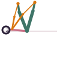

Happy Baby
Ananda Balasana
How to
Lie on your back, draw both knees toward your armpits, and hold the outside edges of your feet, shins roughly vertical.
Benefits
- Releases tension through the lower back and hips
- Gently opens the pelvis in a fully supported position
- A good wind-down after a pelvic floor session
Practice
Rock slowly side to side if it feels good. Keep your tailbone heavy on the floor.

Get the Bandha appFree, no ads, works offline
Google Play
General information, not medical advice. If you have a health condition or pain, talk to a doctor or qualified teacher first.